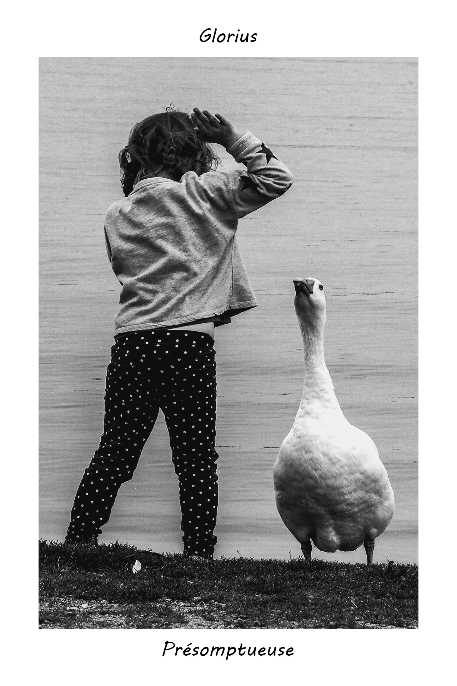
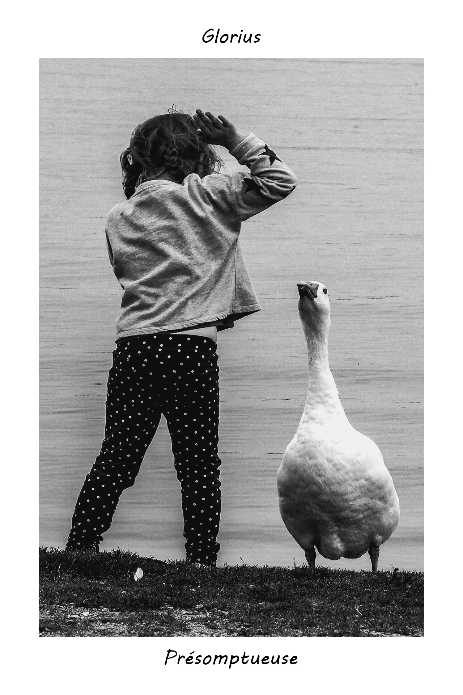
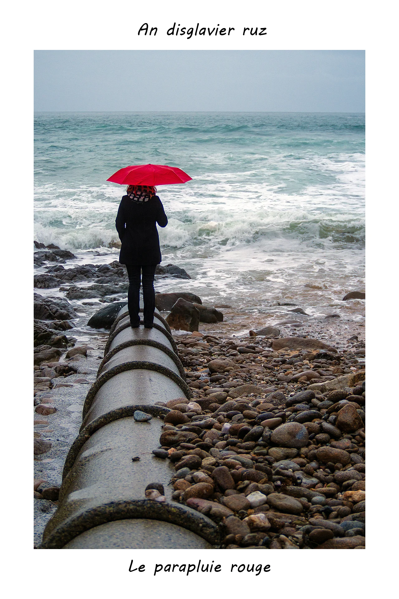
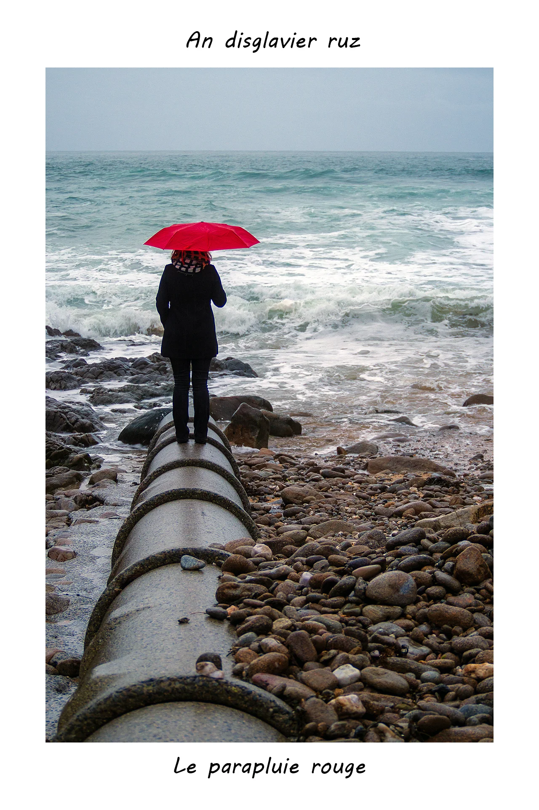
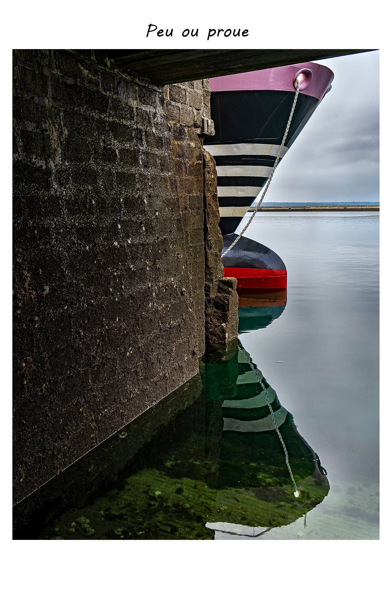
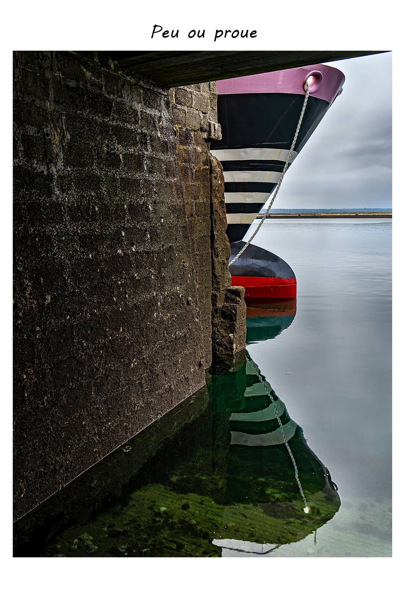

KATOMACH PHOTOGRAPHIE
Stéphane
AC'H
Artiste-auteur chez KATOMACH
A PROPOS
VOYAGEUR SÉDENTAIRE
Bonjour, je m'appelle Stéphane Ac'h,
J'aime raconter des histoires, sous toutes les formes :
écrites, orales, filmiques et donc photographiques.
J'ai le plaisir de vous présenter ici des photographies qui représentent pour la majorité
d'entre elles la ville de Brest, ville où j'ai happé ma première bouffée d'air, sur laquelle j'ai
posé mon premier regard et qui m'inspire au quotidien depuis de nombreuses années.
Pierre Péron, peintre de la marine, l'a surnommée la ville-palimpseste. Et la métaphore fonctionne à merveille, car à l'instar des moines qui réemployaient de vieux parchemins, l'architecte Jean-Baptiste Mathon a élaboré, à partir de la fin de la Seconde Guerre mondiale, le plan de reconstruction de la ville en la faisant bâtir par-dessus l'ancienne cité, souvent en remblayant l'existant.
Ainsi, à quelques exceptions notables, telles que la rue Saint-Malo, la tour Tanguy ou le château, Brest semble être une ville sans Histoire.
Et pourtant, quiconque y séjourne quelque temps ressent ce passé enfoui, qui participe de la singularité du lieu.
A Brest, le passé est enterré.
Il est absent et pourtant très présent, dans un paradoxe très brestois.
Car la ville est aussi, à la fois un point d'arrivée ultime, un bout du monde, et un point de départ vers de multiples ailleurs, un point de fuite.
On n'y passe pas, on y vient, délibérément. Pour ma part, j'y suis venu au monde et ne suis jamais parvenu à la quitter malgré une âme profondément voyageuse.
C'est que Brest est une invitation au voyage en elle-même.
Je suis donc un voyageur sédentaire.
Mais le voyage ultime ne débute-t-il pas au seuil de notre demeure ? Et le voyage que j'accomplis le plus souvent est celui menant de la rive gauche à la rive droite de la rivière Penfeld, et vice-et-versa, via le pont de Recouvrance, qui surplombe l'arsenal, le complexe militaire.
Cet endroit m'aimante littéralement et, au gré des lumières, des ambiances, des brumes et des crachins, j'y cherche constamment des points de vue différents, des compositions nouvelles incluant des micro-événements. Brest ne doit son statut de ville qu'à son arsenal et, selon les événements, les temps de guerre, les temps de paix, son pouls a battu au rythme de l'activité militaire.
Déclinante en temps de paix, florissante en temps de guerre.
Ce n'est que depuis peu qu'elle s'émancipe sensiblement de la tutelle des militaires et qu'elle se cherche d'autres raisons d'exister.
La cité civile gratte, grignote de l'espace aux militaires et cela semble aussi inéluctable que réjouissant, car de nombreux points de vue sont aujourd'hui privatisés et le point de vue des Brestois et des Brestoises sur leur ville risque donc d'évoluer en fonction des espaces reconquis.
Il est d'ailleurs intéressant de noter qu'au figuré, le mot palimpseste prend le sens d'un mécanisme psychologique par lequel de nouveaux sentiments, de nouvelles idées, se substituent aux précédent.e.s et les font disparaître.
Brest a souvent eu une mauvaise image. C'était une infréquentable, peuplée de la chiourme, ces bagnards qui s'égayaient dans les troquets mal famés du quartier de Kéravel, peuplée de marins, des matelots de la marine marchande, « durs et recuits par le feu du Diable » ou des militaires, peuplée des ouvriers des chantiers navals, souvent des exilés, et corollaire de cet inventaire, peuplée de prostituées.
Du fait de la guerre et de la reconstruction, elle est passée d'insalubre à moderne.
Mais cette modernité a vite vieilli.
Et l'absence de vieilles pierres a agi en répulsif.
Elle était grise, triste, trop géométrique et aux constructions soviétiques. Cependant elle a su se renouveler.
Et la quasi absence de vieilles pierres se révèle être stimulant pour les urbanistes, les édiles et, in fine, les photographes. La liberté d'aménager l'espace est grande.
Ici moins de carcan patrimonial que dans des villes préservées des ravages de la guerre.
Et donc l'image de la cité du ponant a évolué au fil du temps et au gré des modes, comme le fait celle de toutes les villes d'ailleurs, mais ici selon une temporalité et des modalités propres induites par son statut singulier de ville reconstruite.
Et l'enjeu pour les faiseurs et faiseuses d'images s'en trouve démultiplié, car en véhiculant des photographies, on participe, modestement, à l'élaboration de l'image de la ville, ou du moins à infléchir ou susciter des tendances, car quoi de plus fluctuant, polymorphe et protéiforme, qu'une image. Et pour peu qu'on la gratte, il se pourrait que l'on découvre, sous la surface sensible, une nouvelle image.
Pierre Péron, peintre de la marine, l'a surnommée la ville-palimpseste. Et la métaphore fonctionne à merveille, car à l'instar des moines qui réemployaient de vieux parchemins, l'architecte Jean-Baptiste Mathon a élaboré, à partir de la fin de la Seconde Guerre mondiale, le plan de reconstruction de la ville en la faisant bâtir par-dessus l'ancienne cité, souvent en remblayant l'existant.
Ainsi, à quelques exceptions notables, telles que la rue Saint-Malo, la tour Tanguy ou le château, Brest semble être une ville sans Histoire.
Et pourtant, quiconque y séjourne quelque temps ressent ce passé enfoui, qui participe de la singularité du lieu.
A Brest, le passé est enterré.
Il est absent et pourtant très présent, dans un paradoxe très brestois.
Car la ville est aussi, à la fois un point d'arrivée ultime, un bout du monde, et un point de départ vers de multiples ailleurs, un point de fuite.
On n'y passe pas, on y vient, délibérément. Pour ma part, j'y suis venu au monde et ne suis jamais parvenu à la quitter malgré une âme profondément voyageuse.
C'est que Brest est une invitation au voyage en elle-même.
Je suis donc un voyageur sédentaire.
Mais le voyage ultime ne débute-t-il pas au seuil de notre demeure ? Et le voyage que j'accomplis le plus souvent est celui menant de la rive gauche à la rive droite de la rivière Penfeld, et vice-et-versa, via le pont de Recouvrance, qui surplombe l'arsenal, le complexe militaire.
Cet endroit m'aimante littéralement et, au gré des lumières, des ambiances, des brumes et des crachins, j'y cherche constamment des points de vue différents, des compositions nouvelles incluant des micro-événements. Brest ne doit son statut de ville qu'à son arsenal et, selon les événements, les temps de guerre, les temps de paix, son pouls a battu au rythme de l'activité militaire.
Déclinante en temps de paix, florissante en temps de guerre.
Ce n'est que depuis peu qu'elle s'émancipe sensiblement de la tutelle des militaires et qu'elle se cherche d'autres raisons d'exister.
La cité civile gratte, grignote de l'espace aux militaires et cela semble aussi inéluctable que réjouissant, car de nombreux points de vue sont aujourd'hui privatisés et le point de vue des Brestois et des Brestoises sur leur ville risque donc d'évoluer en fonction des espaces reconquis.
Il est d'ailleurs intéressant de noter qu'au figuré, le mot palimpseste prend le sens d'un mécanisme psychologique par lequel de nouveaux sentiments, de nouvelles idées, se substituent aux précédent.e.s et les font disparaître.
Brest a souvent eu une mauvaise image. C'était une infréquentable, peuplée de la chiourme, ces bagnards qui s'égayaient dans les troquets mal famés du quartier de Kéravel, peuplée de marins, des matelots de la marine marchande, « durs et recuits par le feu du Diable » ou des militaires, peuplée des ouvriers des chantiers navals, souvent des exilés, et corollaire de cet inventaire, peuplée de prostituées.
Du fait de la guerre et de la reconstruction, elle est passée d'insalubre à moderne.
Mais cette modernité a vite vieilli.
Et l'absence de vieilles pierres a agi en répulsif.
Elle était grise, triste, trop géométrique et aux constructions soviétiques. Cependant elle a su se renouveler.
Et la quasi absence de vieilles pierres se révèle être stimulant pour les urbanistes, les édiles et, in fine, les photographes. La liberté d'aménager l'espace est grande.
Ici moins de carcan patrimonial que dans des villes préservées des ravages de la guerre.
Et donc l'image de la cité du ponant a évolué au fil du temps et au gré des modes, comme le fait celle de toutes les villes d'ailleurs, mais ici selon une temporalité et des modalités propres induites par son statut singulier de ville reconstruite.
Et l'enjeu pour les faiseurs et faiseuses d'images s'en trouve démultiplié, car en véhiculant des photographies, on participe, modestement, à l'élaboration de l'image de la ville, ou du moins à infléchir ou susciter des tendances, car quoi de plus fluctuant, polymorphe et protéiforme, qu'une image. Et pour peu qu'on la gratte, il se pourrait que l'on découvre, sous la surface sensible, une nouvelle image.
Galeries
PHOTOS Portraits
AINSI PONT PONT PONT

DÉCALAGES D'UN PAS CHASSÉ


QUELQUE CHOSE QUI CLOCHE


REGARD EN COIN DE RUE


BESTIAIRE DES VISITEURS
 

CIRCULEZ, Y'A TOUT A VOIR
 

 
